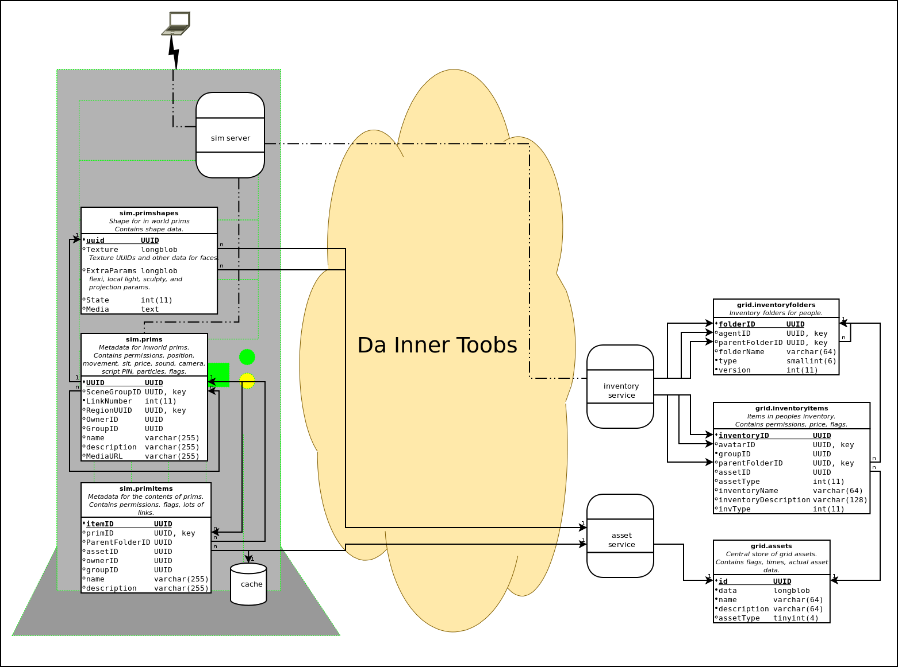

In this section I will mention the stuff that I think I know, and why it might be wrong. There have been major changes in how these things have been dealt with, particularly with the introduction of ROBUST. Personally I have experience with the closed source OpenSim fork that was in use at M7, and the open source OpenSim fork that is used at IG.
There are two types of assets - things that have been rezzed in a sim, and users inventory. While poking around in the M7 system I figured out that both are somewhat similar.
There is database stuff that has meta data at least, and there is file based stuff that seems to include the actual asset data, things like script source, script binaries, texture, sounds, animations. I was not able to completely understand it all before M7 closed.
Received wisdom is that sim assets are stored on the sims server, and that inventory assets are stored on the central database. Recent experience has suggested that this is not correct. While I was testing the IGnoble scripts, I loaded an OAR of my home sim into the sim I was running on my local computer. Surprisingly, my sim server spent the next three hours uploading .. something .. to the grid server (my upload speed is not spectacular, and there was a decent amount of data). Only after it had completed that, did it rez the sim in world, which happened quickly for me, but I was sitting on the same computer as the sim server. A quick inspection showed that I had the expected file based assets on my server, though they where in the cache directory.
My theory is that the sim assets are also stored on the central server, but cached on the sim server. The big upload was probably the entire contents of the OAR file.
Now, lets figure out what's really going on.
ROBUST seems to be the centre of the OS data flow universe. "ROBUST is a flexible server shell ..." the OS web site says, not sure exactly what that means. We shall find out. It basically seems to be a way to connect to arbitrary processing and storage modules, and the storage modules part is where our interest lies on this page.
Sim servers point to one or more ROBUST servers for their services, These pointers are a HTTP URLs that is usually the grid server, and a port number. You can have different ROBUST services on different port numbers, or on different servers. The ROBUST servers can handle one or more of the services. ROBUST servers can point to others, acting as a proxy. ROBUST hosted services can have others as dependencies, they can point to other instances of ROBUST on other URL/ports.
Robust has the concept of IN and OUT connectors. The IN's seem to be the ports used by sim servers and others to connect to the services, they load the proper OUT or code modules. The OUTS seem to be the connectors to the database, or perhaps the code performing the service. Or maybe the OUTs are for sending data back, and the modules are for doing the work?
Apparently ROBUST is designed to allow code reuse.
Note that this will allow us to easily integrate OMG, as we can do that in any language, implement the relevant parts of the ROBUST wire protocol, listen on a given HTTP port, then just tell the ROBUST clients to use that port. Nails:command pump in fact includes provisions to have wrappers for other protocols, which is a perfect match here. So glad we don't have to deal with direct interfacing to C# code. B-)
The ROBUST wire protocol looks like it's HTTP POSTs to the URL and port number. The POST includes the service name, and a verbose (XML, ewww) text command to that service.
Sim servers have these, which include connection strings to the local database server -
These only include a URL to the grid server -
There are three possible asset caches, only one should be on, but none of them can be on -
A quick look shows the sims on the grid server seem to be setup the same way.
ROBUST has this to say -
On sims -
Asset and Inventory services include connection strings to the local database, and URLs to the ROBUST grid server. There is also the cache. Only flotsam cache will be looked at for now.
On the grid server -
Asset service includes a local file part, but may include a database part. Inventory service, dunno. Library service is file based, but not important right now.
Soooo, what is stored where? Which are the real assets? Where's the data, database or file? Where's the cheese? B-)
The source code is here -
Question - What does the sim use it's InventoryService database connection string for? Perhaps that's only needed for when the sim is not using ROBUST?
Hmmm, according to OpenSim/Region/CoreModules/ServiceConnectorsOut/Inventory/InventoryCache.cs -> CacheInventoryServiceURL() there may already be a mechanism in place to use other inventory servers PER USER. For HG I think. Makes sense. B-)
The above is what tracing things from the configuration files gets you. But this is C#, an object oriented programming language. Like most such languages, it's carefully designed to hide implementation details from the programmer. Which is fine, unless it's the details that you really want to know. Then it sucks, and you sometimes have to understand the deep magic, and do a lot of searching and head scratching to figure things out.
So, that's the provided frame work, let's see if we can sort out how that frame work is used, and if anything steps outside of that frame work.
There is still a large piece of the puzzle missing. The above services only seem to deal with the metadata for assets, not with the actual data.
prims is the prims in the sim. primshapes is their shapes. primitems is the content of the sim prims.
prims.RegionID prims.UUID == primshapes.UUID But what about primitems? That has (takes a deep breath) itemID, primID, assetID, and parentfolderID. primID seems to be exactly the same as parentfolderID. And indeed prims.UUID == primitems.primID. itemID and primID are keys, itemID is the primary. primitems.assetID=assets.id
Primitems is only metadata, where is the actual data? Is this what itemID and/or assetID are all about? Primshapes has a Texture blob, but is it all the face textures that go into a prim?
inventoryitems has - inventoryID and assetID (also avatarID and groupID). Oddly enough it has a groupOwned flag to. I thought inventory would only be owned by the person who's inventory it is in, but I have seen things in my own inventory owned by others. Once more, it's only metadata. InventoryID is the primary key.
It appears all roads lead to Rome .. er the assets database. One ginormous amorphous blob of all our stuffs. It has some metadata, an id, and a data blob, the contents of the data blobs on the ones I have seen look to be about the correct size for being the actual data for the asset. id is the primary key. There still might be a file system as well? As a cache only? The assets table on sim servers seems to just be the default assets. The grid server assets table is almost 2 million records, or perhaps only half a million, the system gave two very different counts. Could be where all the damn asset data is stored. B-(
The grid prims table only has assets for the grid sims, plus a few others that are old sims, which got deleted from the regions table automatically I think.
Prims table is all the prims in the grid sims. Prim shapes is data about those prims. Primitems is the contents of those prims. Assets stores stuff for primitems.
Umm, things that used to be in the sim get into the OAR? The new sims I created to test OS 0.7.2 now have stuff in their prim* tables from people that have not logged on. I copied them from Sandbox using OARs. It seems to be true, but why only one or three objects? I don't think OARs populated prim* tables on 0.7.1.
NOTE - it takes a loooong time to search the assets database for a name.
Sim server opensim.prims.RegionUUID and UUID
Sim server opensim.prims.UUID -> Sim server opensim.primshapes.UUID (one to one) The actual prim shape.
Sim server opensim.prims.UUID -> Sim server opensim.primitems.primID (one to many) The meta data for the prims contents.
Sim server opensim.primitems.assetID -> Grid server opensim.assets.id (one to one) The actual data for the prims contents.
prims.SceneGroupID seems to be what ties a linkset together.
Primshapes has two binary blobs, one called Texture, the other called ExtraParams.
primshapes.ExtraParams includes flexi (various flexi parameters), light (local light parameters), sculpt (type, sculptMapTextureUUID), and projection (projectionTextureUUID, FOV, focus, amb).
primshapes.Texture is an OpenMetaverse library binary object that includes data for the textures and colours on each prims side. primshapes.Texture includes texture UUIDs, directly stored as 16 bytes, plus the other texture information, stared as binary, some of it stored as bit fields. For prims with more than one texture, more copies of this data is stored. OpenMetaverse library is included in OpenSim as a binary, no source, but I found the source, just not sure which version.
I'm assuming for the moment that actual texture data is all in the grids assets table, probably cached on the sim server using flotsam. In theory textures have to go into inventory first before they are applied to prims. In practice, OARs can bypass that.
All on the grid server.
opensim.inventoryitems.inventoryID, avatarID, and parentFolderID
opensim.inventoryitems.assetID -> assets.id (one to one) The actual data for the inventory.
opensim.inventoryfolders.folderID, agentID, and ParentFolderID
This seems pretty straight forward.

I tried configuring my home sim server to have it's own ROBUST server, and the sim running there to use it only for AssetService. The immediate result was horribly correct. It can't have been that easy. In the end, it was not that easy. It had the meta data about assets, but the assets data was still on the grid server. The sim shows up on the map as white. I was unable to rez things from inventory, but could create new stuff, and even move objects to the next sim running on someone else's server. Everything else seemed to be working fine, though one person (running on a very underpowered computer) had troubles rezzing herself, and switching back to the grid AssetService seemed to fix that. On the other hand, another person rezzed fine. Both these people where connecting to my home sim server from some other place on the planet than my home. The tests where not exhaustive, but the inability to rez from inventory was a show stopper. Something needs to be fixed for that to work. The fact that it still stored the assets data on the grid server means it was a failed experiment, as that's the primary goal.
Refinements of that experiment would be to see what happens when a new sim is built up within that configuration from newly created prims. What happens during an OAR load? Will the new assets be stored locally, or sent to the grid server, or will it just not work?
This is more likely to succeed, as it's a similar mechanism to that used by HG, a pointer to an external InventoryService is stored with the HG users record on the grid they HGed to.
UserAccounts.ServiceURLs has "HomeURI= GatekeeperURI= InventoryServerURI= AssetServerURI=", or blank, or NULL. It either has to be empty, or properly filled out. They are normal service URLs as used by ROBUST. I think they are only involved in HG. Only one person in the IG database has those filled out, I think that was a test Rizzy was doing. Not sure what HomeURI is, but the others look like the usual ROBUST services. Though GateKeeper is for incoming users? Wonder what HGers get if they are stored in this database table?
HomeURI is the URI to the UserAgent service on their home grid. It's used to authenticate them with their home grid, and to form the URL part that is added to their name in world.
Hmmm, does not look like GatekeeperURI is actually used. shrugs
In theory this should not work, since the prim metadata is on the old sim server, and not accessible from the new server.
I'll have to create a fake texture first, then see if I can fake an OAR with that texture.
Should create a sim with just a test prim in it, with the default texture. Save the OAR. Then see if I can insert a faked texture onto that prim in the OAR.
The terrain texture might be a good choice to experiment with to, they are easily changed in the OAR, and stored in the OAR. Their UUIDs are stored in the regionsettings table.
Just hijacking my own page here for a moment - The console uses the ? key to show help, no matter where you type it. So ? can't be use as part of a name or other arbitrary text. The offending lines are in OpenSim/Framework/Console/LocalConsole.cs starting at line 398.
I just woke up and had an idea, it might turn out to be crap once I have actually thought about it. lol
One of the biggest problems is that sim asset data is spread between the sim server and the grid server, this makes things hard. We can abuse the cache mechanism. Write a cache module that stores sim asset data on the sim server, in a format that matches the rest of OMG. It's not really a cache though, it's the new sim asset database. Have the sim server tell the grid server that it's OK to delete stuff from the asset server, it has it now. On the grid server side, have a "last accessed" time stamp on the assets database. Archive stuff that's not been used for awhile. Actually delete stuff if there's no inventory pointers to it, AND sims using it have said it's OK to delete. Adding some reference counting to that database might help this process to.
This work is licensed under a Creative Commons Attribution-ShareAlike 3.0 Unported License.